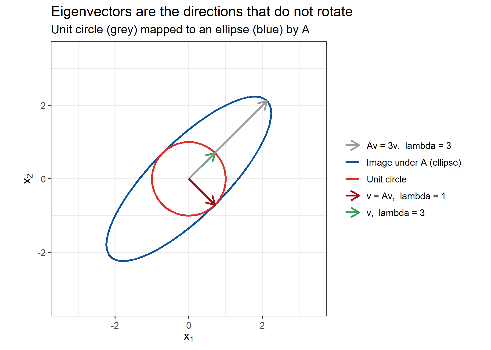
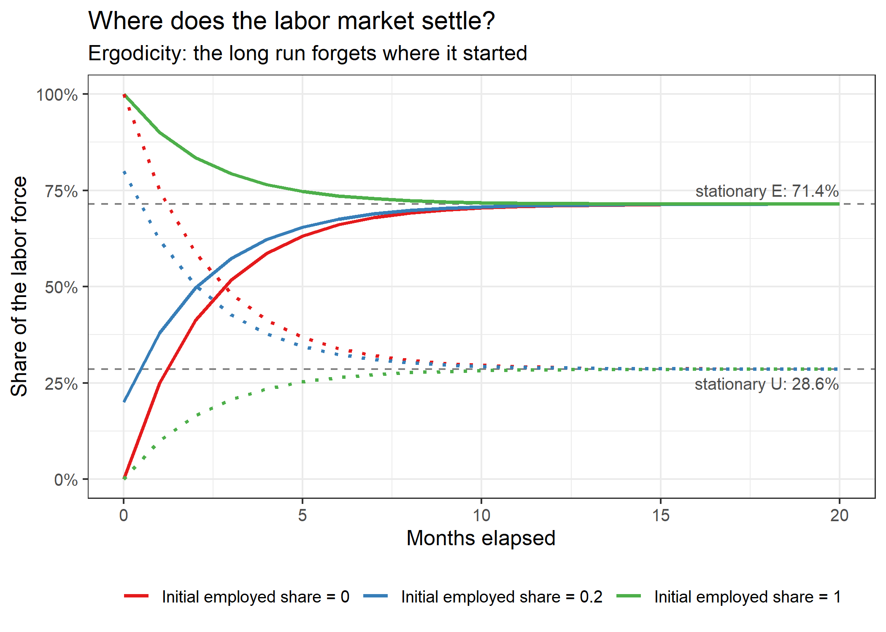
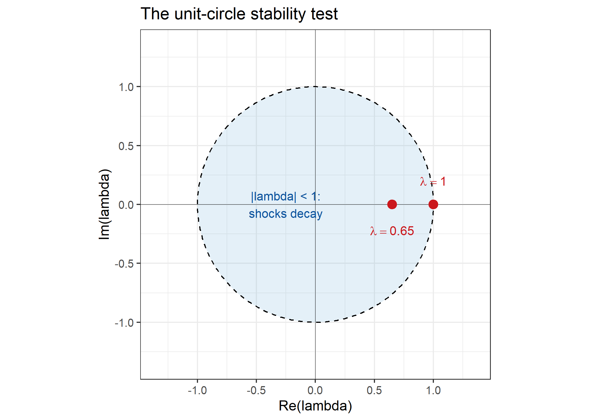

Eigenvalues and Eigenvectors: The Hidden Engines of Linear Dynamics
Why every economist should make friends with the eigendecomposition
1 Background
Most relationships that economists put on a computer are, at their core, linear: regressions, vector autoregressions (VARs), Markov transition matrices, state-space models, and even the local approximations used to solve dynamic stochastic general equilibrium (DSGE) models. Every one of these tools repeatedly multiplies vectors by matrices.
A natural question follows:
When we multiply by the same matrix over and over, what happens in the long run — and why?
The complete answer is given by two objects that live inside the matrix itself: its eigenvalues and eigenvectors. This post explains what they are, how to compute them by hand and in R, and why they do so much of the heavy lifting in economics — from the long-run unemployment rate to whether an estimated macro model is even stable.
2 What are eigenvalues and eigenvectors?
Multiplying a vector \(\mathbf{x}\) by a matrix \(\mathbf{A}\) generally does two things at once: rotates the vector and stretches it. An eigenvector is a special, non-zero direction that is not rotated at all — it is only stretched (or shrunk, or flipped). The amount of stretching along that direction is the corresponding eigenvalue.
The defining equation is short:
\[ \mathbf{A}\mathbf{v} = \lambda \mathbf{v}, \qquad \mathbf{v} \neq \mathbf{0}, \]
where
- \(\mathbf{A}\) is an \(n \times n\) square matrix,
- \(\mathbf{v}\) is an eigenvector of \(\mathbf{A}\),
- \(\lambda\) (lambda) is the associated eigenvalue, which may be positive, negative, zero, or even complex.
In words: along the direction \(\mathbf{v}\), the action of the entire matrix reduces to multiplication by a single number \(\lambda\).
2.1 The characteristic equation
Moving \(\lambda\mathbf{v}\) to the left and inserting the identity matrix \(\mathbf{I}\) gives
\[ (\mathbf{A} - \lambda\mathbf{I})\mathbf{v} = \mathbf{0}. \]
A non-zero solution \(\mathbf{v}\) exists exactly when the matrix \((\mathbf{A}-\lambda\mathbf{I})\) is singular, i.e. its determinant is zero:
\[ \det(\mathbf{A} - \lambda\mathbf{I}) = 0. \]
This is the characteristic equation. It produces a polynomial in \(\lambda\) whose \(n\) roots are the eigenvalues; substituting each root back into \((\mathbf{A}-\lambda\mathbf{I})\mathbf{v} = \mathbf{0}\) gives the eigenvectors.
2.2 A 2 × 2 example
Take the symmetric matrix
\[ \mathbf{A} = \begin{pmatrix} 2 & 1 \\ 1 & 2 \end{pmatrix}. \]
The characteristic equation is
\[ \det\begin{pmatrix} 2-\lambda & 1 \\ 1 & 2-\lambda \end{pmatrix} = (2-\lambda)^2 - 1 = \lambda^2 - 4\lambda + 3 = (\lambda - 1)(\lambda - 3) = 0, \]
so the eigenvalues are \(\lambda_1 = 3\) and \(\lambda_2 = 1\). The eigenvectors (defined only up to scale, so conventionally normalized to unit length) are
\[ \lambda_1 = 3: \quad \mathbf{v}_1 = \frac{1}{\sqrt 2}\begin{pmatrix}1\\1\end{pmatrix}, \qquad \lambda_2 = 1: \quad \mathbf{v}_2 = \frac{1}{\sqrt 2}\begin{pmatrix}1\\-1\end{pmatrix}. \]
Quick check: along the \(45^\circ\) direction, \(\mathbf{A}(1,1)' = (3,3)' = 3(1,1)'\), so the matrix stretches that direction threefold; along \((1,-1)'\) it leaves the vector exactly unchanged.
3 Graphical representation
The definition becomes much easier to see. The code below draws the unit circle, applies \(\mathbf{A}\) to every point on it (the circle becomes an ellipse), and overlays the two eigenvectors. Every point on the circle is both rotated and stretched except points on the eigenvector directions, which stay on their own lines.
The ellipse’s principal axes line up exactly with \(\mathbf{v}_1\) and \(\mathbf{v}_2\), and its semi-axis lengths are \(3\) and \(1\) — precisely the eigenvalues. An eigen-decomposition is, geometrically, a description of the shape the matrix draws.
4 Why eigenvalues govern dynamics
The really important payoff is not one multiplication but repeated multiplication. Consider the linear dynamical system
\[ \mathbf{x}_{t+1} = \mathbf{A}\mathbf{x}_t \quad\Longrightarrow\quad \mathbf{x}_t = \mathbf{A}^t \mathbf{x}_0. \]
Computing \(\mathbf{A}^t\) directly is painful. Instead, collect the eigenvectors as columns of \(\mathbf{P}\) and the eigenvalues in a diagonal matrix \(\mathbf{D}\):
\[ \mathbf{A} = \mathbf{P}\mathbf{D}\mathbf{P}^{-1}, \qquad \mathbf{D} = \begin{pmatrix}\lambda_1 & 0\\0 & \lambda_2\end{pmatrix}. \]
This is the diagonalization. Powers now simplify dramatically, because all the cross-terms in \(\mathbf{P}^{-1}\mathbf{P}\) cancel:
\[ \mathbf{A}^t = \mathbf{P}\mathbf{D}^t\mathbf{P}^{-1}, \qquad \mathbf{D}^t = \begin{pmatrix}\lambda_1^t & 0\\0 & \lambda_2^t\end{pmatrix}. \]
Expanding the initial condition in the eigenvector basis, \(\mathbf{P}^{-1}\mathbf{x}_0 = \mathbf{c}\), gives
\[ \mathbf{x}_t = \mathbf{P}\mathbf{D}^t\mathbf{c} = \sum_{i=1}^{n} c_i \lambda_i^t \mathbf{v}_i. \]
This single formula explains the long run:
- any component with \(|\lambda_i| < 1\) decays geometrically toward zero;
- a component with \(|\lambda_i| > 1\) explodes;
- a component with \(\lambda_i = 1\) persists forever (a steady state, or — when unwanted — a unit root);
- a negative or complex \(\lambda_i\) produces oscillations (complex pairs rotate with period set by their angle).
The eigenvalues are therefore not an abstract exam question. They are the dynamics.
5 Economic application 1: a labor-market Markov chain
Suppose each month workers move between employment (\(E\)) and unemployment (\(U\)) according to the transition matrix
\[ \mathbf{P} = \begin{pmatrix} 0.90 & 0.10 \\ 0.25 & 0.75 \end{pmatrix}, \]
where rows are today’s state and columns are next month’s state: an employed worker stays employed with probability \(0.90\), and an unemployed worker finds a job with probability \(0.25\).
If \(\boldsymbol{\pi}_t\) is the row vector of population shares, then
\[ \boldsymbol{\pi}_{t+1} = \boldsymbol{\pi}_t \mathbf{P}. \]
The stationary distribution \(\boldsymbol{\pi}\) satisfies \(\boldsymbol{\pi} = \boldsymbol{\pi}\mathbf{P}\) with entries summing to one. Transposing, \(\mathbf{P}'\boldsymbol{\pi}' = 1\cdot\boldsymbol{\pi}'\): the stationary distribution is exactly the left eigenvector of \(\mathbf{P}\) associated with eigenvalue 1, normalized to sum to one. This is why every stationary Markov chain has an eigenvalue of one.
Employed Unemployed
Employed 0.90 0.10
Unemployed 0.25 0.75Solving on paper first: stationarity requires \(0.10\,\pi_E = 0.25\,\pi_U\), so \(\pi_E = 2.5\,\pi_U\), and \(\pi_E + \pi_U = 1\) gives
\[ \pi_E = \frac{5}{7} \approx 0.714, \qquad \pi_U = \frac{2}{7} \approx 0.286. \]
Now let R do the same job through the eigen decomposition (left eigenvectors of \(\mathbf{P}\) are ordinary eigenvectors of \(\mathbf{P}'\)):
[1] 1.00 0.65[1] 0.7143 0.2857 Employed Unemployed
[1,] 0.7143 0.2857The second eigenvalue, \(\lambda_2 = 0.65\), governs how fast a workforce off its stationary composition converges back to it: the gap shrinks like \(0.65^t\) — roughly a \(35\%\) reduction per month. We can see this by iterating the chain from several very different starting distributions.

The economic reading is substantive: regardless of whether everyone starts with a job or \(80\%\) start unemployed, the same long-run unemployment rate, about \(28.6\%\), emerges. Initial conditions are forgotten because the non-unit eigenvalue lies strictly inside the unit circle. This “forgetfulness” property — called ergodicity — is what licenses treating a single economy’s long-run averages as population-level statements, and it is diagnosed entirely from eigenvalues.
6 Economic application 2: stability of dynamic models
The same mathematics answers a question every macro forecaster has to ask after estimating a VAR: is the estimated system stable?
For a vector autoregression written in companion form, \(\mathbf{z}_{t+1} = \mathbf{C}\mathbf{z}_t\), a one-time shock dies out if and only if
\[ |\lambda_i(\mathbf{C})| < 1 \quad \text{for every } i, \]
i.e. every eigenvalue of the companion matrix lies inside the unit circle in the complex plane. An eigenvalue outside the circle means a small perturbation grows without bound; an eigenvalue on the circle means a unit root and permanent effects. (In a continuous-time system \(\dot{\mathbf{x}} = \mathbf{A}\mathbf{x}\), the equivalent condition is \(\operatorname{Re}(\lambda_i) < 0\).)
The code below plots the spectrum of the labor-market transition matrix against the unit circle — the exact graphical stability check reported in software such as EViews or vars::stability.

Here \(\lambda = 1\) sits on the circle — exactly as it must, since the level of employment persists — while deviations from that level, governed by \(0.65\), decay. In a VAR, by contrast, a unit eigenvalue signals a non-stationary process that must be differenced or cointegrated before standard inference is valid.
7 More exploration
The eigen decomposition recurs throughout empirical and theoretical work:
- Principal components analysis (PCA). PCs are the eigenvectors of the covariance (or correlation) matrix, ordered by eigenvalue; the eigenvalue is the variance captured by that component. Macro “factors” extracted from hundreds of time series, and the widely used FRED-MD data set, are built this way.
- PageRank and network centrality. Google’s original PageRank is the stationary distribution — again the eigenvector for eigenvalue one — of a Markov chain over web pages. The same construction measures input-output influence and systemic risk in financial networks.
- Local dynamics of nonlinear models. Linearizing a DSGE model around its steady state produces a matrix whose eigenvalues determine saddle-path stability: some eigenvalues must be explosive (forward-looking “jump” variables) and others stable for a unique equilibrium to exist.
- Quadratic forms and GLS. Weighted distance, efficient GMM, and the geometry of multivariate regression all simplify by rotating data onto eigenvector axes.
8 Programming basis:R
Everything above used only base R’s eigen(), which returns a list with $values and a $vectors matrix whose columns are the eigenvectors:
Two practical notes. First, eigenvectors are only identified up to sign and scale — eigen() may return \(-\mathbf{v}\) where a textbook prints \(\mathbf{v}\); the span is identical. Second, real matrices can have complex conjugate eigenvalue pairs (when \(\mathbf{A}\) is not symmetric), and eigen() will store them as complex numbers automatically; plot \(\operatorname{Re}(\lambda)\) against \(\operatorname{Im}(\lambda)\) exactly as in Figure 3.
9 Takeaways
- Eigenvectors are the directions a matrix leaves unrotated; eigenvalues are the stretch factors along them, \(\mathbf{A}\mathbf{v} = \lambda\mathbf{v}\).
- Diagonalization turns repeated multiplication into scalar powers: \(\mathbf{A}^t\mathbf{x}_0 = \sum_i c_i\lambda_i^t\mathbf{v}_i\), so eigenvalues completely determine long-run behavior — decay, persistence, explosion, or oscillation.
- Economics runs on this machinery: a stationary Markov distribution is the eigenvector for \(\lambda = 1\); its other eigenvalues set convergence speed; and VAR/DSGE stability is a unit-circle (or half-plane) test on eigenvalues.
- In practice one call to
eigen()does it — the conceptual work is knowing which eigenvalue answers the question and how to read it.
Whenever a model can be written as repeated multiplication by a matrix, the question “what happens in the long run?” always has the same address: its eigenvalues.
10 Further reading
- Strang, G. Introduction to Linear Algebra (chapters on eigenvalues and Markov matrices).
- Simon, C. P., & Blume, L. Mathematics for Economists (eigenvalues, stability, and phase diagrams).
- Hamilton, J. D. Time Series Analysis (VAR companion-form stability and unit roots).